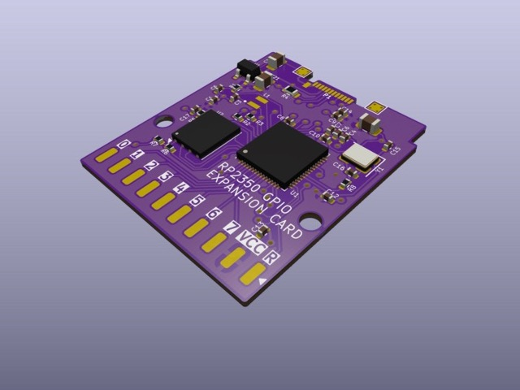
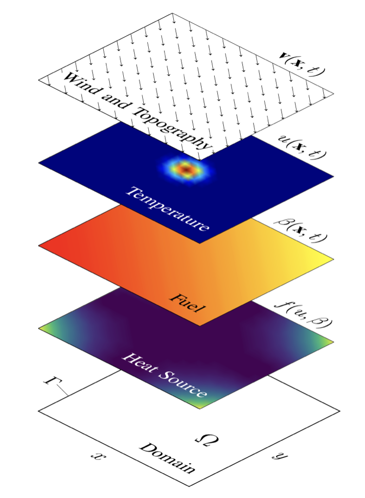
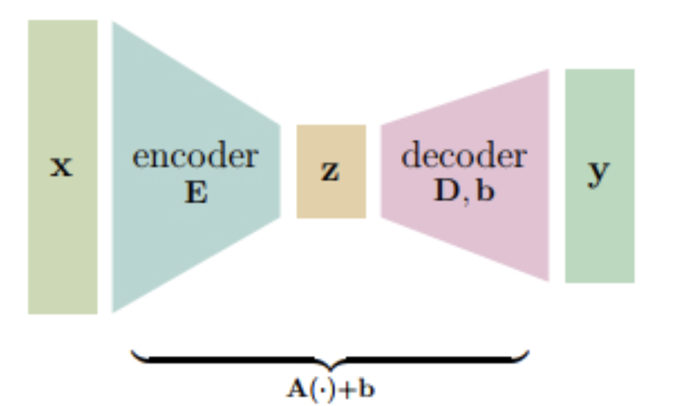

Projects & Research
Current
ECE 1100 Discovery Project: Ultrasound Timing System for Sports Proposal
For my ECE 1100 Discovery Project, I am building a low-cost, do-it-yourself version of the laser timing gates used at sporting events. The system uses two ultrasonic sensors, each paired with an ESP32 microcontroller, to detect when an athlete passes each point and measure the time between the two crossings. The ESP32s communicate with each other and send the results to a computer. The sensors will sit on 3D-printed tripod-style stands, with a reflecting surface opposite each sensor to bounce the ultrasound signal back. My goal is a system that measures split times to within 0.1 seconds, sends the data to a computer, and works reliably outdoors. I am building it with soldering equipment and components from Georgia Tech's Hive Makerspace.
Skills: Microcontroller programming (ESP32), circuit design and building, 3D printing

Custom PCB for an Autoclave System
I am designing and prototyping a custom PCB (printed circuit board) in KiCad, with sensor and relay interfaces that monitor and control the temperature and pressure inside an autoclave in real time. A Teensy microcontroller processes the sensor data, drives the relay switching logic, and sends data wirelessly for monitoring. Tighter temperature and pressure control helps properly cure the epoxy insulation shell of a coaxial transformer being built for a modular power converter system. I am also running thermal CAD and CFD (computational fluid dynamics) simulations to model how heat flows inside the autoclave, which tells me where to place the temperature sensors for the most accurate readings.
Skills: KiCad, PCB design, embedded programming (Teensy), sensors and relays, thermal CAD/CFD
Image: example KiCad board render, RP2350 Expansion Card by VectorVoyager, CC BY-SA 4.0 (cropped).

Computational PDEs and Optimization for Wildfire Control
Honors thesis (August 2025 – May 2026)
For my honors thesis in applied math at Emory University, I studied how wildfires spread using computational partial differential equations (PDEs). I built a numerical solver for a coupled, nonlinear advection-diffusion-reaction model, which captures how fire moves with the wind, spreads outward, and burns through fuel across a 2D landscape. I solved the model using finite element methods (FEM) and finite difference (FD) methods. I then added water and fire-retardant drops to the simulation as a way of fighting the fire, and used Bayesian optimization to choose when and where to make those drops to keep damage as low as possible. I presented the results in my thesis and defended it before a faculty committee, graduating with Highest Honors.
Ongoing extension
I am now extending this work by building the firefighting actions directly into the PDE model itself, instead of treating them as separate events. To optimize these actions, I am using an adjoint-based approach: solving an extra set of "adjoint" equations gives the gradient of total fire damage with respect to every control decision at once, which makes it far more efficient to find the best strategy.
Skills: Python, numerical PDEs, FEM, finite differences, Bayesian optimization, adjoint methods, optimal control
Previous

Optimal Linear Baseline Models for Scientific Machine Learning
In Summer 2025, I took part in an NSF REU (National Science Foundation Research Experience for Undergraduates) in Model Aware and Data Driven Inference at Emory University's Department of Mathematics. Our group built a theoretical framework for optimal linear encoder-decoder models, using Bayes risk minimization to derive closed-form, rank-constrained solutions for inverse recovery, forward simulation, and autoencoding tasks. We then tested these linear models against trained deep neural networks on several datasets, including MNIST images, nonlinear fluid simulations from the shallow water equations, and Fama-French financial factor data, and showed that they can match or outperform the learned networks. We completed this work within the 8-week program, and it was published in Foundations of Data Science. Along the way, I gained a strong understanding of linear algebra in machine learning and scientific computing, along with research skills like presenting and communicating results.
Skills: LaTeX, Python, PyTorch, linear algebra
Exploring ML for Predictive Maintenance Using Imbalance Correction Techniques and SHAP
I did a machine learning research project on predictive maintenance: using sensor data to predict whether a machine is about to fail. I compared several classification models, including random forests and XGBoost, first on a synthetic dataset and then on a real-world one, to see how a theoretical approach holds up in practice. Because machine failures are rare, I used imbalance correction techniques to handle the uneven data. I evaluated the models with performance metrics and with SHAP (Shapley Additive Explanations) values, showing that some algorithms could reliably identify the features that lead to failure in real machines. I presented the paper at the 2022 International Conference on Electrical, Computer and Energy Technologies (ICECET), a peer-reviewed IEEE conference, and it was published in the conference proceedings.
Skills: Machine learning, feature engineering, data preprocessing, Python